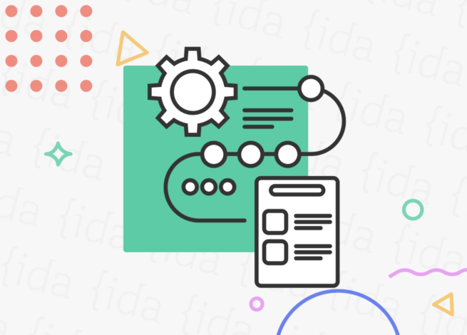

- RECONOCE Y DEFINE SU ENTORNO PERSONAL DE APRENDIZAJE
- El entorno personal de aprendizaje (EPA) se refiere al conjunto de recursos, herramientas y actividades que una persona utiliza para aprender de manera autónoma. Este entorno puede estar basado en las TICCAD e incluir diversas fuentes de información, como libros, cursos en línea, blogs especializados, redes sociales, entre otros. El EPA permite a cada individuo personalizar y adaptar su proceso de aprendizaje a sus necesidades e intereses particulares.

- REFLEXIONA SOBRE LAS CARACTERÍSTICAS DE SITIOS CREADOS
-
Un buen sitio web debe tener un diseño atractivo y fácil de navegar. Esto implica una disposición clara de los elementos, una buena elección de colores y fuentes, y un sistema de navegación intuitivo.
El contenido es fundamental para atraer y retener a los visitantes. Es importante proporcionar información relevante, precisa y actualizada sobre el tema del sitio. Además, se recomienda incluir elementos multimedia, como imágenes, videos y gráficos, para enriquecer la experiencia del usuario. Es esencial que un sitio web se adapte a diferentes dispositivos, como ordenadores de escritorio, tabletas y smartphones. Esto se logra mediante el uso de un diseño responsivo, que se ajuste automáticamente al tamaño de la pantalla del dispositivo utilizado. Para que un sitio web sea más visible en los motores de búsqueda, es importante optimizarlo mediante técnicas de SEO. Esto implica utilizar palabras clave relevantes en el contenido, generar enlaces de calidad y asegurarse de que el sitio sea accesible y rápido de cargar. Fomentar la interacción de los usuarios es clave para crear un sitio web exitoso. Esto se puede lograr a través de formularios de contacto, comentarios en las publicaciones y la integración de redes sociales. También es importante tener en cuenta la retroalimentación recibida para mejorar continuamente el sitio.

- ARGUMENTA SOBRE LAS VENTAJAS Y DESVENTAJAS DE METODOLOGÍAS ACTIVAS CON LAS QUE TUVO EXPERIENCIA
-
Las metodologías activas implican un enfoque más participativo y práctico en el proceso de aprendizaje. Algunas ventajas de estas metodologías son:
- Mayor retención de conocimientos.
- Desarrollo de habilidades prácticas.
- Estimulación del pensamiento crítico y la creatividad.
Las metodologías activas fomentan la participación y el compromiso de los estudiantes, lo que puede resultar en una mayor retención de conocimientos y habilidades. Así, como al involucrarse activamente en las actividades prácticas, los estudiantes pueden desarrollar habilidades que son directamente aplicables en situaciones reales. También, suelen promover el pensamiento crítico y la creatividad, ya que implican la resolución de problemas y la generación de ideas nuevas. Sin embargo, también hay algunas desventajas asociadas con las metodologías activas:
- Mayor tiempo y recursos requeridos.
- Dificultad para medir el aprendizaje.
- Recursos digitales multimedia para el aprendizaje.
- Videos educativos.
- Infografías.
- Juegos educativos.
- Plataformas de aprendizaje.
Las metodologías activas pueden requerir más tiempo y recursos para su implementación, tanto por parte de los docentes como de los estudiantes. La evaluación puede resultar mas desafiante en las metodologías, ya que no se limita a pruebas y exámenes tradicionales, sino que también implica evaluar habilidades y competencias. Los recursos digitales y multimedia ofrecen numerosos beneficios para el desarrollo de las actividades de aprendizaje. Así, como los videos educativos pueden ser utilizados para presentar información de manera visual y atractiva, facilitando la comprensión de conceptos complejos. También las infografías son representaciones gráficas que permiten presentar información de forma clara y concisa, facilitando la comprensión y retención del contenido. Los juegos educativos son una forma divertida y participativa de aprender, ya que permiten a los estudiantes interactuar y aplicar conocimientos en situaciones prácticas. Por último, las plataformas de aprendizaje en línea ofrecen una amplia variedad de recursos y actividades interactivas que se pueden utilizar para complementar el aprendizaje en el aula.